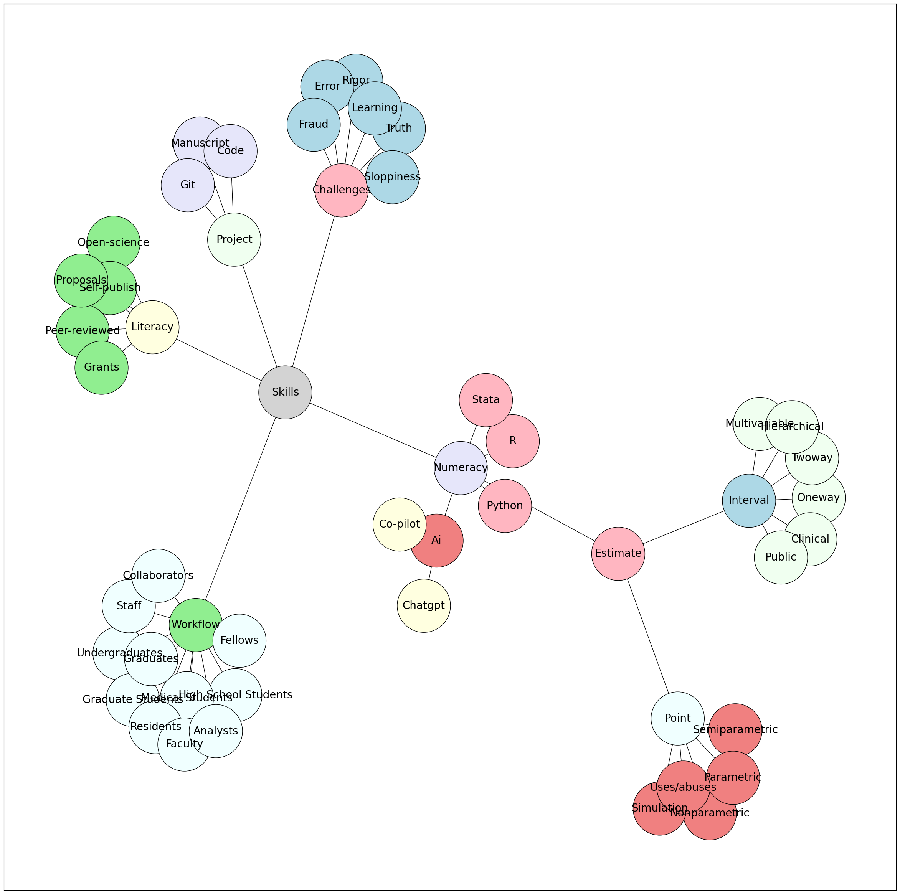

Show code cell source
import networkx as nx
import matplotlib.pyplot as plt
# Set seed for layout
seed = 5
# Directory structure
structure = {
"Skills": ["Literacy", "Project", "Numeracy", "Workflow", "Challenges"],
"Estimate": ["Interval", "R01", "K24", "U01"],
"Literacy": ["Open-Science", "Self-Publish", "Peer-Reviewed", "Grants", "Proposals"],
"Numeracy": ["Python", "AI", "R", "Stata", "Estimate"],
"AI": ["ChatGPT", "Co-Pilot"],
"Project": ["Manuscript", "Code", "Git"],
"Point": ["Nonparametric", "Semiparametric", "Parametric", "Simulation", "Uses/Abuses"],
"Estimate": ["Point", "Interval"],
"Interval": ["Oneway", "Twoway", "Multivariable", "Hierarchical", "Clinical", "Public"],
"Workflow": ["High School Students", "Undergraduates", "Graduate Students", "Medical Students", "Residents", "Fellows", "Faculty", "Analysts", "Staff", "Collaborators", "Graduates"],
"Challenges": ["Truth", "Rigor", "Error", "Sloppiness", "Fraud", "Learning"],
}
# Gentle colors for children
child_colors = ["lightgreen", "lightpink", "lightyellow",
'lavender', 'lightcoral', 'honeydew', 'azure','lightblue',
]
# 'lightsteelblue', 'lightgray', 'mintcream','mintcream', 'azure', 'linen', 'aliceblue', 'lemonchiffon', 'mistyrose'
# List of nodes to color light blue
light_blue_nodes = ["Literacy", "Numeracy", "You", "Project", "Challenges"]
G = nx.Graph()
node_colors = {}
# Function to capitalize the first letter of each word
def capitalize_name(name):
return ' '.join(word.capitalize() for word in name.split(" "))
# Assign colors to nodes
for i, (parent, children) in enumerate(structure.items()):
parent_name = capitalize_name(parent.replace("_", " "))
G.add_node(parent_name)
# Set the color for Skills
if parent_name == "Skills":
node_colors[parent_name] = 'lightgray'
else:
node_colors[parent_name] = child_colors[i % len(child_colors)]
for child in children:
child_name = capitalize_name(child.replace("_", " "))
G.add_edge(parent_name, child_name)
if child_name in light_blue_nodes:
node_colors[child_name] = 'lightblue'
else:
node_colors[child_name] = child_colors[(i + 6) % len(child_colors)] # You can customize the logic here to assign colors
colors = [node_colors[node] for node in G.nodes()]
# Set figure size
plt.figure(figsize=(30, 30))
# Draw the graph
pos = nx.spring_layout(G, scale=30, seed=seed)
nx.draw_networkx_nodes(G, pos, node_size=10000, node_color=colors, edgecolors='black') # Boundary color set here
nx.draw_networkx_edges(G, pos)
nx.draw_networkx_labels(G, pos, font_size=20)
plt.show()

Fellows
Nidhi Mathur
Osman Khan
Pranjal Mehta